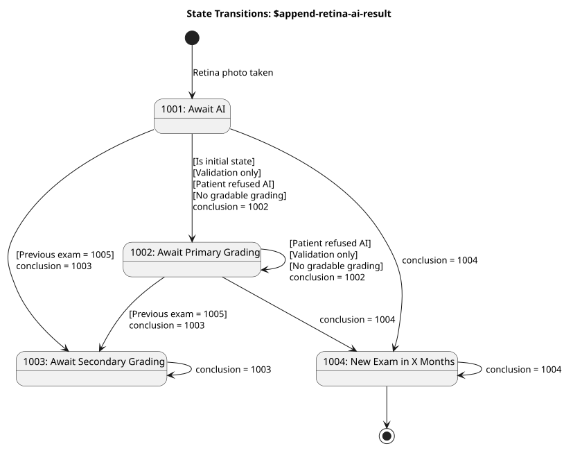

RetinaIntegration
0.9.1 - ci-build
RetinaIntegration - Local Development build (v0.9.1) built by the FHIR (HL7® FHIR® Standard) Build Tools. See the Directory of published versions
| Official URL: http://dips.no/fhir/RetinaIntegration/OperationDefinition/append-retina-ai-result | Version: 0.9.1 | ||||
| Draft as of 2026-06-08 | Computable Name: AppendRetinaAIResult | ||||
OperationDefinition for appending retina AI results to an existing DiagnosticReport.
The $append-retina-ai-result operation is used by the AI Integrator to add AI analysis results to an existing DiagnosticReport.
See RetinaAppendAIResultOperation-Example for an example of the parameters.
Add AI result to an examination using the following operation:
[baseUrl]/DiagnosticReport/[id]/$append-retina-ai-result
[id] is the identifier UUID (Universally Unique Identifier), sometimes referred to as a GUID, of the DiagnosticReport, a.k.a. an examination, to update.
The state of an examination is determined by the DiagnosticReport.conclusionCode (1000 series).
These are the guard conditions for entering one state from another state:
Is initial state The examination must exit the initial state.
Previous=1005 If the previous examination concluded with 1005, the current examination shall go to secondary grading.
Patient refused AI When a patient refuses AI-assisted grading, the input from AI is not allowed to influence the grading process.
Validation only If the input is for validation only, the input should not influence the grading process.
No gradable grading A conclusion from the AI integrator that is based on AI grading requires at least one gradable eye grading result.
The API strives to be lenient on input. If input from AI integrator does not conform to these rules, the input will be persisted, but the status of the examination will remain unchanged rather than being set to the proper next process step.
If the desired new state is not achieved, the API will return 200 and explain the issue in Operation Outcome in the body of the response. (Marked as OK- in the table.)
| Nr. | Current State | Desired State | Guard Condition | Next State | Result | Notes |
|---|---|---|---|---|---|---|
| 1 | 1001 | 1001 | Is initial state | 1002 | OK- | Set 1002 not 1001, because examination is not allowed to continue to await AI. |
| 2 | 1001 | 1002 | Previous=1005 | 1003 | OK- | Set 1003, not 1002, because the previous examination concluded with directly to secondary grading. |
| 3 | 1001 | 1002 | Validation only | 1002 | OK | OK to set 1002, because primary grading is correct also when validating. |
| 4 | 1001 | 1002 | None | 1002 | OK | OK to set 1002, examination moved to primary grading. |
| 5 | 1001 | 1003 | Previous=1005 | 1003 | OK | OK to set 1003, because the previous examination concluded with directly to secondary grading. |
| 6 | 1001 | 1003 | Validation only | 1002 | OK- | Set 1002, not 1003, because input was only for validation. |
| 7 | 1001 | 1003 | Patient refused AI | 1002 | OK- | Set 1002, not 1003, because patient refused AI. |
| 8 | 1001 | 1003 | No gradable grading | 1002 | OK- | Set 1002, not 1003, because the payload does not indicate successful grading. |
| 9 | 1001 | 1003 | None | 1003 | OK | Skips primary grading and goes to secondary grading based on AI findings. |
| 10 | 1001 | 1004 | Previous=1005 | 1003 | OK- | Set 1003, not 1004, because the previous examination concluded with directly to secondary grading. |
| 11 | 1001 | 1004 | Validation only | 1002 | OK- | Set 1002, not 1004, because input was only for validation. |
| 12 | 1001 | 1004 | Patient refused AI | 1002 | OK- | Set 1002, not 1004, because the patient has refused AI. |
| 13 | 1001 | 1004 | No gradable grading | 1002 | OK- | Set 1002, not 1004, because the payload does not indicate successful grading. |
| 14 | 1001 | 1004 | None | 1004 | OK | Set 1004: New screening examination in X months. This is the happy case which will have most of the traffic. |
| 15 | 1002 | 1002 | None | 1002 | OK | OK, no change. |
| 16 | 1002 | 1003 | Patient refused AI | 1002 | OK- | Do not set 1003, because the patient has refused AI. |
| 17 | 1002 | 1003 | Validation only | 1002 | OK | Do not set 1003, because input was only for validation. |
| 18 | 1002 | 1003 | None | 1003 | OK | Examination was awaiting primary grading but AI integrator wants it to go to secondary grading. |
| 19 | 1002 | 1004 | Previous=1005 | 1003 | OK- | Set 1003, not 1004, because previous examination concluded with directly to secondary grading. |
| 20 | 1002 | 1004 | Validation only | 1002 | OK- | Do not set 1004, because input was only for validation. |
| 21 | 1002 | 1004 | Patient refused AI | 1002 | OK- | Do not set 1004, because the patient has refused AI. |
| 22 | 1002 | 1004 | No gradable grading | 1002 | OK- | Do not set 1004, because the payload does not indicate successful grading. |
| 23 | 1002 | 1004 | None | 1004 | OK | AI Integrator handles an examination that was awaiting primary grading. |
| 24 | 1003 | 1002 | Illegal transition | 1003 | OK- | Do not set 1002 because regression from secondary to primary grading is not allowed. |
| 25 | 1003 | 1003 | None | 1003 | OK | OK, no change. |
| 26 | 1003 | 1004 | Illegal transition | 1003 | OK- | Do not set 1004, because cannot finalize an examination awaiting secondary grading. |
| 27 | 1004, 1005, 1006, 1007 | Same as current | None | Same as current | OK | State remains unchanged, as desired. |
| 28 | 1004, 1005, 1006, 1007 | Different from current | None | Same as current | OK- | State remains unchanged because you cannot change a final state. |
How to read the table:
conclusion parameter in the APIThese are the states that an examination may be in, as determined by the conclusion code. Ref. retina-conclusion-code-cs.
| State | Description | Entry Criteria | Exit Criteria | StateType |
|---|---|---|---|---|
| 1001 | Await AI | Retina photo is taken | Input from AI integrator is received, or manual grading is done. | Initial |
| 1002 | Await primary grading | Photographer ordered primary grading | Primary grading is done | |
| 1003 | Await secondary grading | Ordered in EyeCare by primary grader or previous examination ordered directly to secondary grading (1005). | Secondary grading is done | |
| 1004 | New examination in X months | Ordered in EyeCare | Final | |
| 1005 | New examination in X months directly to secondary grading | Ordered in EyeCare | Final | |
| 1006 | Screening program is suspended for the patient. | Ordered in EyeCare | Final | |
| 1007 | Patient is discharged from the screening program | Ordered in EyeCare | Final |
These are the states the AI integrator is allowed to set as target state if it wants to change the state from current state. Ref. retina-append-ai-conclusion-vs
| Event | Description | Payload | Example of when to use |
|---|---|---|---|
| 1002 | Primary grading current examination | Optional AI grading | AI is not able to grade pictures |
| 1003 | Secondary grading current examination | Optional AI grading | AI grading indicates that something is wrong. |
| 1004 | New screening examination in X months | Gradable AI grading, recall interval | No need for further grading in this examination. |
This diagram shows the state transitions when AI integrator wants to change the state of an examination. The guard conditions are represented in brackets []. The guard conditions always takes precedence over the desired conclusion coming in through the API operation.

Example: The examination is in state 1001, awaiting AI grading.. AI evaluates that the eyes are good and the integrator concludes that next state should be 1004. The API service sees that the previous examination concluded with 1005 and therefore sets the next state to 1003.
In summary, the AI integrator can only advance the state of an examination that is in state 1001 or 1002. For all other states, the operation is accepted and the payload is persisted, but the conclusion code remains unchanged.
| Code | Meaning | Description | Persisted |
|---|---|---|---|
| 204 | Success | The operation completed successfully and the DiagnosticReport was updated with the desired state. | Yes |
| 200 | Success But | The operation completed successfully but there are issues in Operation Outcome. | Yes |
| 400 | Bad Request | The request was malformed or contained invalid parameters. | No |
| 401 | Unauthorized | The server was not able to authenticate the user so authorization could not be done. | No |
| 403 | Forbidden | The user is not authorized to use the API. | No |
| 404 | Not Found | No DiagnosticReport with the given [id] was found. |
No |
| 409 | Conflict | DiagnosticReport [id] already has a grading, or sectraStudyId is linked to another examination. |
No |
| 422 | Unprocessable Entity | The request was well-formed but violated business rules (e.g. missing required parameter combinations). | No |
| 500 | Internal Server Error | An unexpected server-side error occurred. | No |
Language: en
URL: [base]/DiagnosticReport/[id]/$append-retina-ai-result
| Use | Name | Scope | Cardinality | Type | Binding | Documentation |
| IN | sectraStudyId | 0..1 | string | Sectra study ID for the retinal images that were analyzed. | ||
| IN | conclusion | 1..1 | CodeableConcept | Retina Conclusion (Required) | Conclusion indicating the next step. It MUST be a single code from the 1000 series. To achieve a state change, the conclusion must be one of the goal states applicable for AI integration: 1002 , 1003 or 1004. Refer to the state machine diagram for details. | |
| IN | monthsUntilNextExamination | 0..1 | integer | The recall interval in months until the patient's next examination. Must be included if the conclusion is a 1004 or 1005. Value must be a positive integer greater than 1 | ||
| IN | leftGradability | 0..1 | code | Retina AI Gradability (Required) | Gradability of the left eye for AI analysis. Must be a single code from the Retina AI Gradability ValueSet. | |
| IN | rightGradability | 0..1 | code | Retina AI Gradability (Required) | Gradability of the right eye for AI analysis. Must be a single code from the Retina AI Gradability ValueSet. | |
| IN | leftDiabeticRetinopathy | 0..1 | decimal | Left eye diabetic retinopathy evaluation, a decimal between 0.0 and 5.0 | ||
| IN | leftDiabeticMacularEdema | 0..1 | boolean | Left eye diabetic macular edema evaluation. True if diabetic macular edema is present. | ||
| IN | rightDiabeticRetinopathy | 0..1 | decimal | Right eye diabetic retinopathy evaluation, a decimal between 0.0 and 5.0 | ||
| IN | rightDiabeticMacularEdema | 0..1 | boolean | Right eye diabetic macular edema evaluation. True if diabetic macular edema is present. | ||
| IN | rightEyeImage | 0..* | Observation (Retina Image Parameter) | Right eye images used in the AI analysis. MUST conform to RetinaImageParameter profile. | ||
| IN | leftEyeImage | 0..* | Observation (Retina Image Parameter) | Left eye images used in the AI analysis. MUST conform to RetinaImageParameter profile. | ||
| IN | aiDevice | 0..1 | Device (Retina AI Device) | AI Device that performed the analysis. Includes AI product name, algorithm version and protocol version. | ||
| IN | performedDateTime | 0..1 | dateTime | Date and time when the retinal AI analysis was performed. | ||
| IN | cameraDevice | 0..1 | Device (Retina Camera Device) | Camera device used to capture the retinal images. | ||
| IN | fullReport | 1..1 | Attachment | Technical details for further reference about the AI grading. | ||
| IN | validation | 1..1 | boolean | Set true if the AI result is for validation purposes only and will not be used in clinical decision making. |